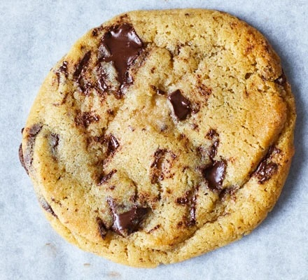

Chocolate chip cookie recipe

Chocolate chip cookie recipe
A simple, quick and easy chocolate chip cookie. A classic staple!
Ingredients
- 120g butter, softened
75g light brown sugar
- 75g golden caster sugar
- 1 medium egg
- 1 tsp vanilla extract
- 180g plain flour
- 1/2 tsp bicarbonate of soda
- 150g dark chocolate, cut into chunks
Steps
- Heat oven to 180C/160C fan/gas 4 and line two baking sheets with parchment.
- Cream butter and sugars together until very light and fluffy, then beat egg and vanilla.
- Once combined, stir in the flour, bicarb, chocolate and 1/4 tsp salt.
- Scoop 10 large tbsps of the mixture onto the trays, leaving enough space between each to allow for spreading.
- Bake for 10-12 mins or until firm at the edges but still soft in the middle - they will harden a little as they cool
- Leave to cool on the tray for a few mins before eating warm